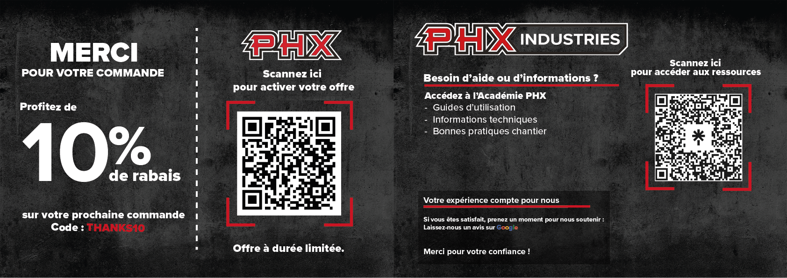

Projets PHX Industries
Découvrez les projets que j'ai réalisés pour PHX Industries. Ces réalisations démontrent mon expertise en design graphique, création de matériel marketing, et solutions créatives personnalisées.

PINK MAGIC
Conception d’une étiquette pour un nouveau liquide de polissage destiné à la vente, nommé PINK MAGIC. Le projet visait à créer un visuel attrayant et professionnel afin de refléter l’efficacité et l’identité du produit en magasin. En complément, réalisation d’un montage vidéo promotionnel servant à annoncer le lancement du produit et à en mettre en valeur les caractéristiques principales. Le tout a été conçu pour capter l’attention et renforcer l’impact marketing du produit sur différentes plateformes.
Outils utilisés : Adobe Illustrator, logiciel de montage vidéo CapCut

CARROUSEL PHX
Conception d’un carrousel destiné aux réseaux sociaux pour la compagnie PHX, dans le but de promouvoir ses services et renforcer sa présence en ligne. Le projet comprenait la sélection et l’adaptation d’images sur Canva, ainsi que la mise en page et la création des visuels finaux sur Adobe Illustrator. L’objectif était de produire un contenu cohérent, dynamique et attrayant, respectant l’identité visuelle de la marque et optimisé pour la publication sur les plateformes sociales.
Outils utilisés : Canva, Adobe Illustrator

CARROUSEL HTG
Conception d’un carrousel destiné aux réseaux sociaux pour la compagnie HTG, dans le but de promouvoir ses services et de renforcer son image de marque. Le projet consistait à créer un contenu visuel clair, cohérent et engageant, adapté aux plateformes numériques. J’ai assuré la mise en page et la création des visuels en respectant l’identité visuelle de l’entreprise afin de capter l’attention du public cible.
Outils utilisés : Adobe Illustrator, Canva

KIT DE LIVRAISON
Conception d’un coupon inclus dans un kit de livraison destiné aux clients lors d’un achat. Le projet avait pour objectif de créer un visuel simple, professionnel et attrayant afin d’améliorer l’expérience client et de renforcer la fidélisation. J’ai réalisé le design en mettant l’accent sur la clarté de l’information et l’identité visuelle de la marque.
Outils utilisés : Adobe Illustrator

POWER SOLUTIONS
Conception d’un dépliant pour Power Solutions destiné à l’imprimerie, dans le but de présenter les services de l’entreprise de manière claire et professionnelle. Le projet visait à structurer l’information de façon efficace tout en créant un visuel attrayant et cohérent avec l’identité de la marque. J’ai réalisé la mise en page et le design graphique en portant une attention particulière à la hiérarchie de l’information et à la lisibilité.
Outils utilisés : Adobe Illustrator